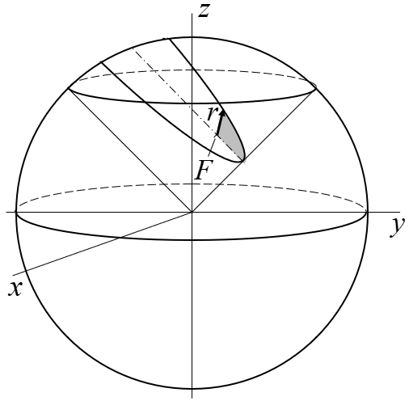
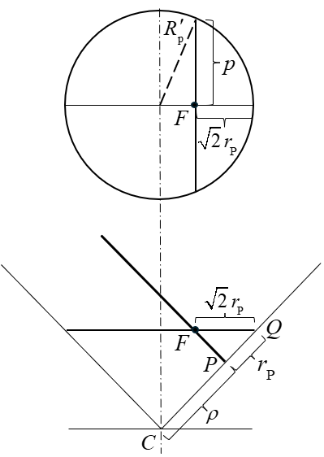
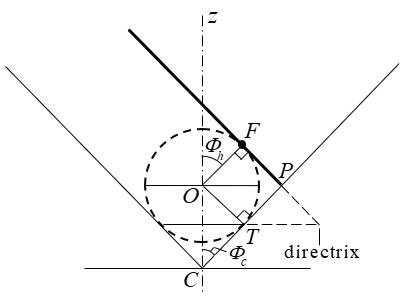

Parabolic Orbits
Parabolic orbit analysis and results
The parabola is the boundary between closed and open orbits. Its eccentricity is exactly e = 1 and its specific energy is exactly zero, so every parabolic orbit has the same shape and differs from the others only in size. That size is set by the semi-latus rectum p alone. The semi-major axis a has no finite value for a parabola, so it does not appear on this page except where the parabola is compared with the ellipse or the hyperbola.
As a conic section, the parabola is cut by a plane parallel to one generator of the cone. Fig. P-1 shows it on the same 45° cone used for the ellipse in Fig. E-1, so the transition from one to the other can be seen directly. The shaded area is the area swept in equal times, as on the Elliptical and Hyperbolic pages. In polar form, with the true anomaly θ measured from periapsis,
and the periapsis distance is

Parabolic orbits are not limited to the 45° cone. A plane parallel to a generator of any right circular cone cuts a parabola, with \(\Phi_h = 90^\circ - \Phi_c\). The 45° cone is used here so the parabola can be compared directly with the elliptical geometry, and the edge-view results that follow belong to that cone. On the 45° cone, ellipses come from planes tilted less steeply than the parabola's, and hyperbolas from planes tilted more steeply. The parabola's plane sits between them.
Edge-View Derivation of ρ
On the 45° cone, the apex C lies above periapsis P, not above the focus as it does on the Elliptical page. In edge view the two generators meet at C at 90°. The orbital plane is parallel to one generator, which runs toward apoapsis at infinity. The opposite generator is therefore perpendicular to the orbital plane and meets it at periapsis P. The distance CP along that generator is ρ. The lower view in Fig. P-2 shows this arrangement.
Two subscripts appear together in the derivation, so they are worth separating first. \(R'_p\) and \(R_p\) carry a lowercase p because they belong to the section circle through the latus rectum, whose half-chord is the semi-latus rectum p. The uppercase P in \(r_\mathrm{P}\) marks periapsis. The derivation brings the two together.
Pass a plane through F perpendicular to the cone axis. It cuts the cone in a circle of radius \(R'_p\), shown in the upper view of Fig. P-2, and meets the perpendicular generator at a point Q. In the edge view, triangle PFQ has a right angle at P and a 45° angle at Q, so PQ = \(r_\mathrm{P}\) and FQ = \(\sqrt{2}\,r_\mathrm{P}\). The latus rectum is a chord of the section circle through F, with half-length p, at a distance \(\sqrt{2}\,r_\mathrm{P}\) from the circle's edge:
Substituting \(r_\mathrm{P} = p/2\) from Eq. P-2,
\[ p^{2} = \sqrt{2}\,R'_p\,p - \frac{p^{2}}{2} \quad\Rightarrow\quad R'_p = \frac{3}{2\sqrt{2}}\,p \]
On the 45° cone the slant distance from C to the circle is \(\sqrt{2}\) times its radius. Every point on the circle is this distance from C, including both ends of the latus rectum:
Along the perpendicular generator, CP = CQ − PQ, so
The result ρ = p holds only on the 45° cone. On a cone of half-angle \(\Phi_c\), \(\rho = p/(2\sin^{2}\Phi_c)\).

Every parabola has zero energy, so the whole family of parabolas is an equal-energy family, and each member is the same shape scaled by p. On one 45° cone the family is a set of parallel cutting planes, each a distance ρ = p from C, so p grows linearly with the offset.
On the Elliptical page, C sits above F at height \(\sqrt{ap}\), on the circle whose diameter is the major axis. That construction has no parabolic counterpart, because the circle grows without bound. The elliptical equal-energy family (Fig. E-4) is a fan sharing a common a, and the hyperbolic family uses cones of different \(\Phi_c\). The parabolic family needs neither: one cone and a translation.
The Dandelin Construction, Specific to the Parabola
Commonality introduced the Dandelin sphere construction in general terms. For the parabola a single sphere fits, tangent to the orbital plane at F. The second sphere and the empty focus F′ recede to infinity. Fig. P-3 shows the construction in edge view on the 45° cone, with the sphere's center O on the z-axis and its tangent point T on the perpendicular generator.
The sphere touches the cone along a circle, its tangent circle, and the directrix is the line where the plane of that circle meets the orbital plane. Equal tangents from any orbit point to the sphere give: distance to F = distance to the tangent circle along the generator = distance to the directrix. That is e = 1. In the edge view the tangent circle is the horizontal chord through T, below the sphere's center, and the directrix, perpendicular to the page, appears as the point where that chord, extended, meets the orbital plane extended past P. P lies midway between F and the directrix, a distance \(r_\mathrm{P}\) from each.
On the 45° cone the distance from C to the tangent circle along any generator equals \(r_\mathrm{P}\). Measured on the perpendicular generator, PT = PF = \(r_\mathrm{P}\) (equal tangents from P), so the distance from C to the tangent circle is ρ − \(r_\mathrm{P}\):
Fig. P-3 shows Eq. P-6 directly. The points O, F, P and T form a square of side \(r_\mathrm{P}\): OF and OT are radii meeting the orbital plane and the generator at right angles, and PF = PT are equal tangents from P. The sphere's radius is therefore \(r_\mathrm{P}\), and on the 45° cone CT = OT = \(r_\mathrm{P}\). On a cone of half-angle \(\Phi_c\), the distance from C to the tangent circle is \(r_\mathrm{P}\cot^{2}\Phi_c\).

Tilt Angle and the Cone Half-Angle
With e = \(\sin\Phi_h/\cos\Phi_c\) = 1, the tilt angle and the half-angle are complementary:
Every cone therefore carries a parabola, and its half-angle fixes the tilt, as noted in the introduction. On the 45° cone, \(\Phi_h\) = 45°, the hinge between ellipses and hyperbolas. Eq. E-7, sin(2\(\Phi_h\)) = e, also gives \(\Phi_h\) = 45° at e = 1. It is the one tilt where sin(2\(\Phi_h\)) and \(\sqrt{2}\sin\Phi_h\) agree.
The same 45° cone also carries the hyperbola with e = \(\sqrt{2}\), the parallel cut of the Hyperbolic page (\(\cos\Phi_c = 1/e\)), which is the equilateral member of the hyperbolic family. The 45° choice therefore ties this page to both the Elliptical and Hyperbolic pages. Table P-1 collects the three cases.
| Case | Cone relation | On the 45° cone | Half-angle \(\Phi_c\) |
|---|---|---|---|
| Ellipse | \(\sin\Phi_h/\cos\Phi_c = e < 1\) | \(\Phi_h < 45^\circ\) | Any; fixes \(\Phi_h\) |
| Parabola | \(\Phi_h + \Phi_c = 90^\circ\) | \(\Phi_h = 45^\circ\) | Any; fixes \(\Phi_h\) |
| Hyperbola | Parallel cut: \(\cos\Phi_c = 1/e\) | \(\Phi_h > 45^\circ\), up to e = \(\sqrt{2}\) | At least \(\cos^{-1}(1/e)\); the parallel cut is the minimum |
For the hyperbola, \(\sin\Phi_h = e\cos\Phi_c\) cannot exceed 1, which is why its half-angle has a lower limit. On the 45° cone, ρ = p and the distance from the apex to the tangent circle equals \(r_\mathrm{P}\). On a cone of half-angle \(\Phi_c\), \(\rho = p/(2\sin^{2}\Phi_c)\) and that distance is \(r_\mathrm{P}\cot^{2}\Phi_c\).
The Bridge Relation
On the 45° cone, the apex distance R exceeds the focal radius r by the constant \(r_\mathrm{P}\). From any orbit point, the tangent along the generator to the sphere's tangent circle equals the tangent to F, which is r. Adding the constant distance \(r_\mathrm{P}\) from C to the tangent circle (Eq. P-6) gives
At the ends of the latus rectum, r = p and R = 3p/2, which matches \(R_p\) from Eq. P-4. The same result follows directly from Eq. P-5. Since CP is perpendicular to the orbital plane, an orbit point a distance d from P satisfies \(R^{2} = \rho^{2} + d^{2}\), and on the parabola this equals \((r + r_\mathrm{P})^{2}\).
The hyperbola's parallel cut gives the same linear form, R = r + a (see the Hyperbolic page). The ellipse's \(R^{2} = r^{2} + ap\) (Eq. E-9) is a Pythagorean form, from C placed above F, which the parabola cannot use. Whether a linear Bridge Relation also holds for the ellipse on its own right circular cone, which would make the relation uniform across all three cases, remains an open item.
From Vis-Viva to Barker's Equation1
The integral developed on the Commonality page is written in terms of a, which the parabola does not have (Table C-1). With zero energy the motion equation follows directly from vis-viva instead:
The angular momentum per unit mass is constant, \(h = r^{2}\,d\theta/dt = \sqrt{\mu p}\), so \(dt = r^{2}\,d\theta/\sqrt{\mu p}\). Substituting D = tan(θ/2), Eq. P-1 becomes \(r = p(1 + D^{2})/2\) and \(d\theta = 2\,dD/(1 + D^{2})\). Integrating from the time of periapsis passage T gives Barker's equation:
With zero energy the time equation is a cubic in tan(θ/2), and unlike Kepler's equation it inverts in closed form, with no iteration. With \(W = 3\sqrt{\mu/p^{3}}\,(t - T)\),
Barker's equation and its inverse are also given by Vallado,2 with different symbols: B in place of D, λ in place of W, and ν for the true anomaly θ. Vallado also notes that Barker was not the first to find this solution, since Halley (1705) and Euler (1744) had worked it out before him, though the equation carries Barker's name.
The factor \(\sqrt{\mu/p^{3}}\) is kept explicit, in the same way \(\sqrt{\mu/a^{3}}\) is on the other pages, rather than being written as a mean motion.
Relation to the Ellipse, Hyperbola and Rectilinear Cases
The parabola is the limit of both the ellipse and the hyperbola as a → ∞ with p held fixed. The energy, \(-\mu/2a\) for the ellipse and \(+\mu/2a\) for the hyperbola, goes to zero from either side, and the periapsis distance \(r_\mathrm{P} = p/(1+e)\) goes to p/2.
The comparisons on this page fit together. The three equal-energy families are a fan sharing a common a for the ellipse, a set of cones at different \(\Phi_c\) for the hyperbola, and a translation on a single cone for the parabola. Table P-1 places the parabola's tilt at the hinge between the other two. The Bridge Relation is linear for the parabola and the hyperbola and Pythagorean for the ellipse as constructed on its page.
The radial case, p → 0, is taken up on the Rectilinear page, where the rectilinear parabola \(r^{3} = 9\mu t^{2}/2\) serves as the reference curve between the rectilinear ellipse and hyperbola, and the three e = 1 cases are compared. A fuller synthesis of all three orbit types is planned for a closing Recap page.